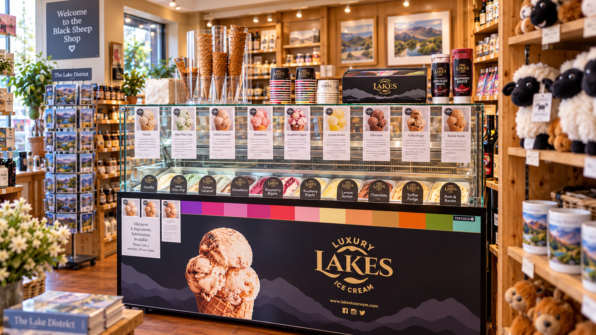

Luxury Lakes Ice Cream
Ice cream worth stopping for.
Our dedicated Luxury Lakes Ice Cream cabinet sits alongside the gift shop. Flavours change with availability, and the range below reflects the established flavour selection used for the site.

Allergen information: recipes and supplier information can change. Please ask us for current allergen and product information before ordering.